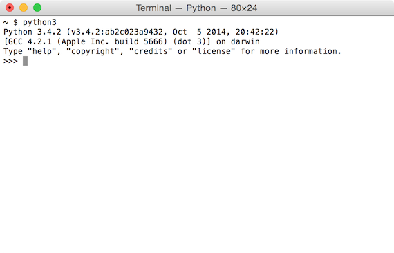
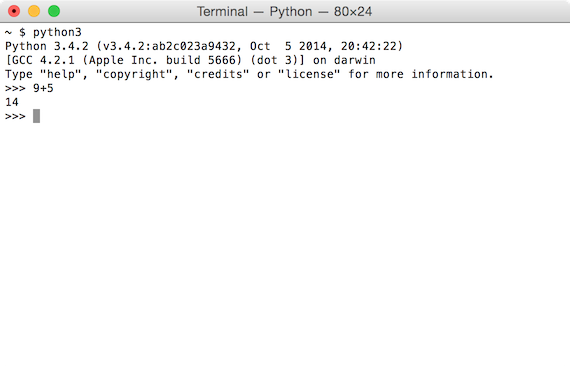
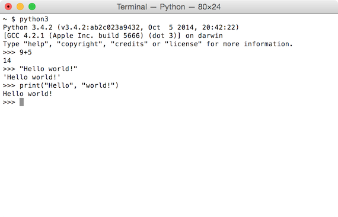
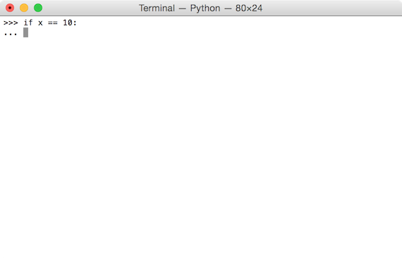
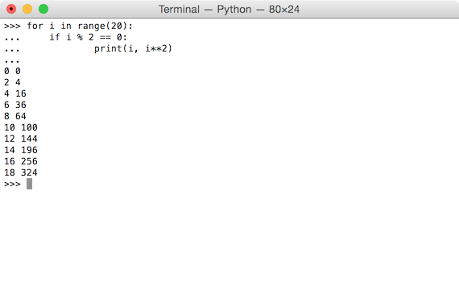

In this guide, you will learn how to use the interactive Python shell.
For most assignments in the class, you will be required to write out full Python programs in a text editor (see Lab 1 for more about Komodo Edit). However, it is often useful to test out small chunks of code to see how they work. The interactive Python shell is a perfect tool for this job.
Don't worry if you don't understand the code used on this page yet! You will soon!
Note: If you are using a Mac, you must install Python first.
Open a terminal and type python3 without any arguments instead of supplying a file name. Instead of running a program, it will display a slightly different looking prompt. This will let you run lines of Python code instead of the usual terminal commands you use.
The Python shell will evaluate simple arithmetic expressions, function calls, or print statements, and show the result.
 Later on in this course, you will work with loops and conditional statements. Python uses indentation to determine whether a line of code is inside or outside one of these blocks.
The interactive Python shell will tell you when you may want to indent your code by changing the prompt from >>> to ....
If you want to continue the if statement, indent the line by pressing the tab key, as you would in a standard text editor. If you do not press the tab key, Python will assume the next line of code is not meant to be in the block.
You can also write blocks within blocks by pressing the tab key multiple times. If you have been using Komodo Edit, this should be familiar to you.
To exit the Python shell, type exit() and hit return or type Control-D.